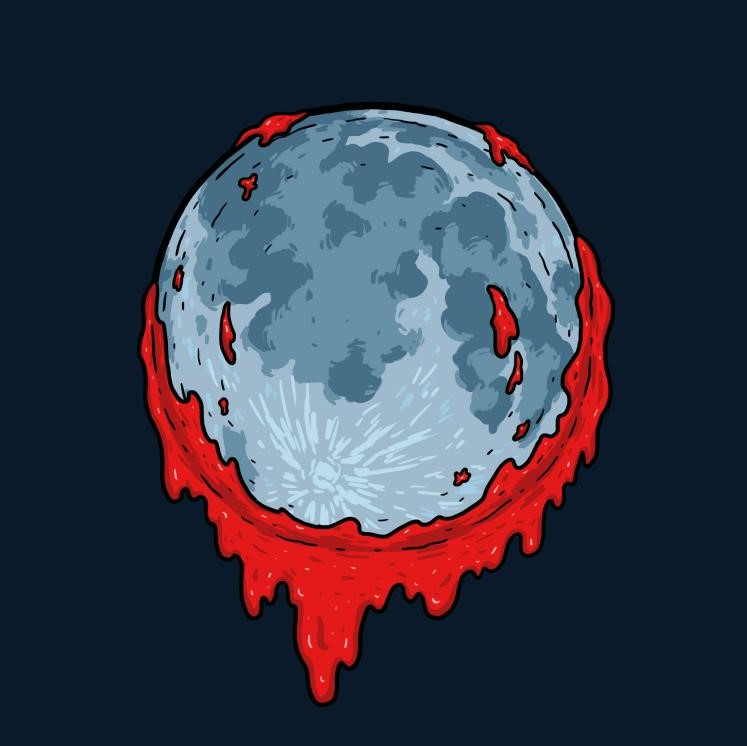

During the day, all players gather to discuss what occurred during the night. Suspicion and accusations begin to fly as players try to piece together clues from the previous night’s events. Citizens work together, trying to identify the Mafia and the Killer through conversation and debate. The Detective may subtly hint at their findings without revealing their identity, while the Mafia and Don blend in, pretending to be innocent. At the end of the day, players vote to eliminate one person, hoping to target an enemy. The results of the vote can shift the balance of power, either bringing the town closer to victory or giving the Mafia an advantage
NIGHT
During the night, the game takes a darker turn as each role secretly takes action. The Mafia and their leader, the Don, choose a Citizen to eliminate. The Killer, acting alone, picks their own target, trying to survive by thinning the numbers. The Medic can choose one player to protect, possibly saving them from being killed that night. Meanwhile, the Detective investigates one player to uncover whether they are aligned with the Mafia or not. All actions are taken in secret, and the results are revealed in the morning, setting the stage for the next round of discussions and voting.
GAME CONCLUSION
"The game concludes when one side achieves victory. If the Mafia and their leader, the Don, succeed in eliminating all Citizens, they claim the win. However, the Citizens, aided by the Detective and Medic, can win by discovering and eliminating the Mafia and Killer through careful investigation and strategic voting. The Killer operates independently, aiming to be the last one standing. Each ending unfolds differently, with alliances, deception, and survival shaping the final outcome."
 During the day, all players gather to discuss what occurred during the night. Suspicion and accusations begin to fly as players try to piece together clues from the previous night’s events. Citizens work together, trying to identify the Mafia and the Killer through conversation and debate. The Detective may subtly hint at their findings without revealing their identity, while the Mafia and Don blend in, pretending to be innocent. At the end of the day, players vote to eliminate one person, hoping to target an enemy. The results of the vote can shift the balance of power, either bringing the town closer to victory or giving the Mafia an advantage
During the day, all players gather to discuss what occurred during the night. Suspicion and accusations begin to fly as players try to piece together clues from the previous night’s events. Citizens work together, trying to identify the Mafia and the Killer through conversation and debate. The Detective may subtly hint at their findings without revealing their identity, while the Mafia and Don blend in, pretending to be innocent. At the end of the day, players vote to eliminate one person, hoping to target an enemy. The results of the vote can shift the balance of power, either bringing the town closer to victory or giving the Mafia an advantage The game concludes when one side achieves victory. If the Mafia and their leader, the Don, succeed in eliminating all Citizens, they claim the win. However, the Citizens, aided by the Detective and Medic, can win by discovering and eliminating the Mafia and Killer through careful investigation and strategic voting. The Killer operates independently, aiming to be the last one standing. Each ending unfolds differently, with alliances, deception, and survival shaping the final outcome."
The game concludes when one side achieves victory. If the Mafia and their leader, the Don, succeed in eliminating all Citizens, they claim the win. However, the Citizens, aided by the Detective and Medic, can win by discovering and eliminating the Mafia and Killer through careful investigation and strategic voting. The Killer operates independently, aiming to be the last one standing. Each ending unfolds differently, with alliances, deception, and survival shaping the final outcome."